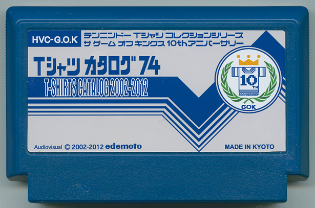

Tシャツカタログ74
江南匡晃／EDITMODE・マスター
京都の老舗「テンニンドー」からライセンスを取得しクールでナイスなTシャツ「ザゲームオブキングス」をドロップし続けるEDEMOTO(旧：江出本）が創立10周年を記念し過去10年で制作した74作品をカタログとして一本のカセットにまとめたぞ！ 全Tシャツ解説＆名作Tシャツ箱詰めゲーム「内職さん」に新モード「パーカー編」も入ったスペシャル版！ これで君も今日からGOK博士だ！